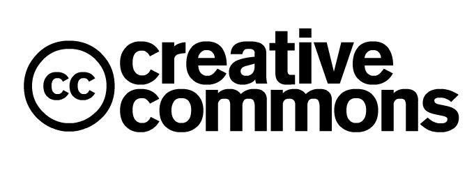
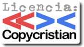

Legalidad de los contenidos en red
Autor/es: Jesús R. Peinado
Ver texto en modo acordeón
Panorama legal actual
Si bien es cierto que el panorama legal actual referente a la legalidad de contenidos en Internet y su descarga sin mediar retribución al titular de estos contenidos es algo difuso, también es cierto que el código penal es claro y conciso en los términos de "copia privada", "ánimo de lucro" y "perjuicios a terceros".
Artículo 270.
1. Será castigado con la pena de prisión de seis meses a dos años y multa de 12 a 24 meses quien, con ánimo de lucro y en perjuicio de tercero, reproduzca, plagie, distribuya o comunique públicamente, en todo o en parte, una obra literaria, artística o científica, o su transformación, interpretación o ejecución artística fijada en cualquier tipo de soporte o comunicada a través de cualquier medio, sin la autorización de los titulares de los correspondientes derechos de propiedad intelectual o de sus cesionarios.
2. Será castigado con la pena de prisión de seis meses a dos años y multa de 12 a 24 meses quien intencionadamente exporte o almacene ejemplares de las obras, producciones o ejecuciones a que se refiere el apartado anterior sin la referida autorización. Igualmente incurrirán en la misma pena los que importen intencionadamente estos productos sin dicha autorización, tanto si éstos tienen un origen lícito como ilícito en su país de procedencia; no obstante, la importación de los referidos productos de un Estado perteneciente a la Unión Europea no será punible cuando aquellos se hayan adquirido directamente del titular de los derechos en dicho Estado, o con su consentimiento.
3. Será castigado también con la misma pena quien fabrique, importe, ponga en circulación o tenga cualquier medio específicamente destinado a facilitar la supresión no autorizada o la neutralización de cualquier dispositivo técnico que se haya utilizado para proteger programas de ordenador o cualquiera de las otras obras, interpretaciones o ejecuciones en los términos previstos en el apartado 1 de este artículo.
En la LPI se va más allá y se definen términos como remuneración compensatoria (más conocida como canon) y se explica mejor el carácter de la "copia privada".
Artículo 31. Reproducciones provisionales y copia privada.
1. No requerirán autorización del autor los actos de reproducción provisional a los que se refiere el artículo 18 que, además de carecer por sí mismos de una significación económica independiente, sean transitorios o accesorios y formen parte integrante y esencial de un proceso tecnológico y cuya única finalidad consista en facilitar bien una transmisión en red entre terceras partes por un intermediario, bien una utilización lícita, entendiendo por tal la autorizada por el autor o por la ley.
2. No necesita autorización del autor la reproducción, en cualquier soporte, de obras ya divulgadas cuando se lleve a cabo por una persona física para su uso privado a partir de obras a las que haya accedido legalmente y la copia obtenida no sea objeto de una utilización colectiva ni lucrativa, sin perjuicio de la compensación equitativa prevista en el artículo 25, que deberá tener en cuenta si se aplican a tales obras las medidas a las que se refiere el artículo 161. Quedan excluidas de lo dispuesto en este apartado las bases de datos electrónicas y, en aplicación del artículo 99.a), los programas de ordenador.
Sentencias judiciales, abogados especializados y asociaciones de consumidores afirman que descargarse archivos audiovisuales, aunque estén protegidos por copyright, es legal, amparándose en el derecho de copia privada y siempre que no haya ánimo de lucro. Actualmente el debate se encuentra en torno a lo que se entiende por copia privada y lo que realmente implica este concepto. Hasta el momento, la doctrina de que la copia privada se extiende más allá de su comprador o prestador es la que está ganando los juicios en España.
Asimismo, la SGAE defiende la postura de que el ánimo de lucro no es el hecho de lucrarse como se entiende normalmente, sino que postula que existe ánimo de lucro al beneficiarse cultural u ociosamente por la descarga de obras licenciadas con copyright. Sobre esto, David Bravo, abogado especializado en Internet y Propiedad intelectual, dijo:
«Si el ánimo de lucro se interpretara de la forma en la que ustedes dicen se daría el absurdo de que alguien que fotocopie una página de un libro que ha sacado de la biblioteca es un delincuente y debe ser encerrado entre 6 meses y 2 años en prisión pues se da una reproducción parcial con ánimo de lucro [...]. [Sin embargo] por hurtarlo y al no sobrepasar el precio de lo sustraído las 50.000 pesetas no estaría cometiendo ningún delito sino una mera falta.»
Además, se debe tener en cuenta la aportación y clarificación del Jefe de la Brigada de Investigación Tecnológica de la Policía Judicial, Jorge Martín, que durante el "Congreso de webmasters" celebrado en Madrid los días 17 y 18 de noviembre de 2007, declaró ante una pregunta sobre los derechos de autor en internet que
"No pasa nada, podéis bajar lo que queráis del eMule. Pero no lo vendáis."
Canon
La ley establece actualmente una remuneración compensatoria que consiste en un canon o impuesto que grava cualquier dispositivo capaz de reproducir, almacenar o copiar contenidos de cualquier tipo, sean o no licenciados. Este impuesto se añade al precio de venta del producto y es recaudado por la SGAE. Según la versión de esta asociación (supuestamente, Sociedad General de Autores y Editores), este impuesto o canon no repercute en el consumidor, sino que repercute en el productor y distribuidor, ignorando totalmente la lógica subida del precio de venta al publico de los dispositivos.
El primer problema que plantea este canon es que parte de la base de que todos somos culpables de usar estos dispositivos electrónicos para usar contenidos con copyright. Este planteamiento hace que la presunción de inocencia no exista para los consumidores, y que la mayor parte de los dispositivos comprados paguen un canon por una actividad que finalmente no desarrollan. Es decir, que si una empresa necesita comprar una partida de discos ópticos vírgenes para el almacenamiento de información para sus trabajadores, esa partida de discos estará pagando un canon a la SGAE sin almacenar en ningún momento ningún tipo de información, música, imágenes, video o texto relacionado con contenidos licenciados.
El segundo problema se relaciona con el cobro de este canon. Como canon, resulta ser un impuesto que grava los objetos de consumo y cuya procedencia resulta ser, como todos los impuestos, la ley. Es decir, que como todos los impuestos que contempla la ley, debería ser recaudado por el organismo público competente. Pero no, en este caso este canon esta recaudado por una Asociación privada (SGAE), lo cual incumple los planteamientos democráticos primarios que se basan en la independencia del estado respecto a entidades privadas. Además, la SGAE cobra por cualquier copia de cualquier artista, aunque solo aglutine
Y para terminar, el tercer problema de este canon se basa en la idea de conseguir prohibir las descargas libres de internet, sin ni siquiera plantearse dejar de embolsar el canon. Es decir, las sociedades de autores deberían elegir: o canon y dejar de pedir la ilegalización de las descargas de internet, o renunciar al canon y pedir la ilegalización de las descargas.
Además, en España es ilegal la copia de discos o contenidos por DRM, pese a que ya se paga un canon para tener derecho a la copia privada de la que hablábamos antes.
A continuación, el Articulo de la LPI donde se define el canon por copia privada.
Artículo 25. Compensación equitativa por copia privada.
1. La reproducción realizada exclusivamente para uso privado, mediante aparatos o instrumentos técnicos no tipográficos, de obras divulgadas en forma de libros o publicaciones que a estos efectos se asimilen reglamentariamente, así como de fonogramas, videogramas o de otros soportes sonoros, visuales o audiovisuales, originará una compensación equitativa y única por cada una de las tres modalidades de reproducción mencionadas, en favor de las personas que se expresan en el párrafo b del apartado 4, dirigida a compensar los derechos de propiedad intelectual que se dejaran de percibir por razón de la expresada reproducción. Este derecho será irrenunciable para los autores y los artistas, intérpretes o ejecutantes.
2. Esa compensación se determinará para cada modalidad en función de los equipos, aparatos y soportes materiales idóneos para realizar dicha reproducción, fabricados en territorio español o adquiridos fuera de éste para su distribución comercial o utilización dentro de dicho territorio.
3. Lo dispuesto en los apartados anteriores no será de aplicación a los programas de ordenador ni a las bases de datos electrónicas.
4. En relación con la obligación legal a que se refiere el apartado 1, serán:
a.Deudores: Los fabricantes en España, en tanto actúen como distribuidores comerciales, así como los adquirentes fuera del territorio español, para su distribución comercial o utilización dentro de éste, de equipos, aparatos y soportes materiales previstos en el apartado 2.
b. Los distribuidores, mayoristas y minoristas, sucesivos adquirentes de los mencionados equipos, aparatos y soportes materiales, responderán del pago de la compensación solidariamente con los deudores que se los hubieran suministrado, salvo que acrediten haber satisfecho efectivamente a éstos la compensación y sin perjuicio de lo que se dispone en los apartados 14, 15 y 20.
c. Acreedores: Los autores de las obras explotadas públicamente en alguna de las formas mencionadas en el apartado 1, juntamente en sus respectivos casos y modalidades de reproducción, con los editores, los productores de fonogramas y videogramas y los artistas intérpretes o ejecutantes cuyas actuaciones hayan sido fijadas en dichos fonogramas y videogramas.
5. Para los equipos, aparatos y soportes materiales de reproducción analógicos, el importe de la compensación que deberá satisfacer cada deudor será el resultante de la aplicación de las siguientes cantidades:
Para equipos o aparatos de reproducción de libros o publicaciones asimiladas reglamentariamente a libros:
a. 15,00 euros por equipo o aparato con capacidad de copia de hasta nueve copias por minuto.
b. 121,71 euros por equipo o aparato con capacidad de copia desde 10 hasta 29 copias por minuto.
c. 162,27 euros por equipo o aparato con capacidad de copia desde 30 hasta 49 copias por minuto.
d. 200,13 euros por equipo o aparato con capacidad de copia desde 50 copias por minuto en adelante.
e. Para equipos o aparatos de reproducción de fonogramas: 0,60 euros por unidad de grabación.
f. Para equipos o aparatos de reproducción de videogramas: 6,61 euros por unidad de grabación.
g. Para soportes materiales de reproducción sonora: 0,18 euros por hora de grabación o 0,003005 euros por minuto de grabación.
h. Para soportes materiales de reproducción visual o audiovisual: 0,30 euros por hora de grabación o 0,005006 euros por minuto de grabación.
6. Para los equipos, aparatos y soportes materiales de reproducción digitales, el importe de la compensación que deberá satisfacer cada deudor será el que se apruebe conjuntamente por los Ministerios de Cultura y de Industria, Turismo y Comercio, conforme a las siguientes reglas:
6.1. Con carácter bienal, a partir de la última revisión administrativa, los Ministerios de Cultura y de Industria, Turismo y Comercio publicarán en el Boletín Oficial del Estado y comunicarán a las entidades de gestión de derechos de propiedad intelectual y a las asociaciones sectoriales, identificadas por el Ministerio de Industria, Turismo y Comercio, que representen mayoritariamente a los deudores a los que se refiere el apartado 4, el inicio del procedimiento para la determinación de los equipos, aparatos y soportes materiales sujetos al pago por la compensación equitativa por copia privada, así como para la determinación, en su caso, de las cantidades que los deudores deberán abonar por este concepto a los acreedores.
La periodicidad bienal de las revisiones administrativas a las que se refiere el párrafo anterior podrá reducirse mediante acuerdo de los dos ministerios citados. Dicha modificación deberá tener en cuenta la evolución tecnológica y de las condiciones del mercado.
6.2. Una vez realizada la publicación a que se refiere la regla anterior, las partes interesadas referidas en ella dispondrán de cuatro meses para comunicar a los Ministerios de Cultura y de Industria, Turismo y Comercio los acuerdos a los que hayan llegado como consecuencia de sus negociaciones o, en su defecto, la falta de tal acuerdo.
6.3. Los Ministerios de Cultura y de Industria, Turismo y Comercio, en el plazo de tres meses, contado desde la comunicación o desde el agotamiento del plazo referidos en la regla anterior, establecerán, mediante orden conjunta, la relación de equipos, aparatos y soportes materiales, las cantidades aplicables a cada uno de ellos y, en su caso, la distribución entre las diferentes modalidades de reproducción de libros, de sonido y visual o audiovisual, previa consulta al Consejo de Consumidores y Usuarios y previo informe del Ministerio de Economía y Hacienda. Dicha orden ministerial conjunta tendrá que ser motivada en el caso de que su contenido difiera del acuerdo al que hayan llegado las partes negociadoras. En tanto no se apruebe esta orden ministerial se prorrogará la vigencia de la anterior.
6.4. Las partes negociadoras dentro del proceso de negociación y, en todo caso, los Ministerios de Cultura y de Industria, Turismo y Comercio, a los efectos de aprobación de la orden conjunta a que se refiere la regla anterior, deberán tener en cuenta, entre otros, los siguientes criterios:
a. El perjuicio efectivamente causado a los titulares de derechos por las reproducciones a que se refiere el apartado 1, teniendo en cuenta que si el perjuicio causado al titular es mínimo no podrá dar origen a una obligación de pago.
b. El grado de uso de dichos equipos, aparatos o soportes materiales para la realización de las reproducciones a que se refiere el apartado 1.
c. La capacidad de almacenamiento de los equipos, aparatos y soportes materiales.
d. La calidad de las reproducciones.
e. La disponibilidad, grado de aplicación y efectividad de las medidas tecnológicas a que se refiere el artículo 161.
f. El tiempo de conservación de las reproducciones.
g. Los importes correspondientes de la compensación aplicables a los distintos tipos de equipos y aparatos deberán ser proporcionados económicamente respecto del precio medio final al público de los mismos.
7. Quedan exceptuados del pago de la compensación:
a. Los equipos, aparatos y soportes materiales adquiridos por quienes cuenten con la preceptiva autorización para llevar a efecto la correspondiente reproducción de obras, prestaciones artísticas, fonogramas o videogramas, según proceda, en el ejercicio de su actividad, lo que deberán acreditar a los deudores y, en su caso, a sus responsables solidarios, mediante una certificación de la entidad o de las entidades de gestión correspondientes, en el supuesto de adquirir los equipos, aparatos o materiales dentro del territorio español.
b. Los discos duros de ordenador en los términos que se definan en la orden ministerial conjunta que se contempla en el anterior apartado 6 sin que en ningún caso pueda extenderse esta exclusión a otros dispositivos de almacenamiento o reproducción.
c. Las personas naturales que adquieran fuera del territorio español los referidos equipos, aparatos y soportes materiales en régimen de viajeros y en una cantidad tal que permita presumir razonablemente que los destinarán al uso privado en dicho territorio.
d. Asimismo, el Gobierno, mediante real decreto, podrá establecer excepciones al pago de esta compensación equitativa y única cuando quede suficientemente acreditado que el destino o uso final de los equipos, aparatos o soportes materiales no sea la reproducción prevista en el artículo 31.2.
8. La compensación equitativa y única a que se refiere el apartado 1 se hará efectiva a través de las entidades de gestión de los derechos de propiedad intelectual.
9. Cuando concurran varias entidades de gestión en la administración de una misma modalidad de compensación, éstas podrán actuar frente a los deudores en todo lo relativo a la percepción de la compensación equitativa y única en juicio y fuera de él, conjuntamente y bajo una sola representación; a las relaciones entre dichas entidades se les aplicarán las normas que rigen la comunidad de bienes. Asimismo, en este caso, las entidades de gestión podrán asociarse y constituir, conforme a la legalidad vigente, una persona jurídica a los fines expresados.
10. Las entidades de gestión de los acreedores comunicarán al Ministerio de Cultura el nombre o denominación y el domicilio de la representación única o de la asociación que, en su caso, hubieran constituido. En este último caso, presentarán, además, la documentación acreditativa de la constitución de dicha asociación, con una relación individualizada de sus entidades miembros, en la que se indique su nombre y su domicilio.
Lo dispuesto en el párrafo anterior será de aplicación a cualquier cambio en la persona de la representación única o de la asociación constituida, en sus domicilios y en el número y calidad de las entidades de gestión, representadas o asociadas, así como en el supuesto de modificación de los estatutos de la asociación.
11. El Ministerio de Cultura ejercerá el control de la entidad o de las entidades de gestión o, en su caso, de la representación o asociación gestora de la percepción del derecho, en los términos previstos en el artículo 159, y publicará, en su caso, en el "Boletín Oficial del Estado" una relación de las entidades representantes o asociaciones gestoras con indicación de sus domicilios, de la respectiva modalidad de la compensación en la que operen y de las entidades de gestión representadas o asociadas. Esta publicación se efectuará siempre que se produzca una modificación en los datos reseñados.
A los efectos previstos en el artículo 159, la entidad o las entidades de gestión o, en su caso, la representación o asociación gestora que hubieran constituido estarán obligadas a presentar al Ministerio de Cultura, los días 30 de junio y 31 de diciembre de cada año, relación pormenorizada de las declaraciones-liquidaciones, así como de los pagos efectuados a que se refiere el apartado 13, correspondientes al semestre natural anterior.
12. La obligación de pago de la compensación nacerá en los siguientes supuestos:
a. Para los fabricantes en tanto actúen como distribuidores y para los adquirentes de equipos, aparatos y soportes materiales fuera del territorio español con destino a su distribución comercial en éste, en el momento en que se produzca por parte del deudor la transmisión de la propiedad o, en su caso, la cesión del uso o disfrute de cualquiera de aquéllos.
b. Para los adquirentes de equipos, aparatos y soportes materiales fuera del territorio español con destino a su utilización dentro de dicho territorio, desde el momento de su adquisición.
13. Los deudores mencionados en el párrafo a del apartado 12 presentarán a la entidad o a las entidades de gestión correspondientes o, en su caso, a la representación o asociación mencionadas en los apartados 8 a 11, ambos inclusive, dentro de los 30 días siguientes a la finalización de cada trimestre natural, una declaración-liquidación en la que se indicarán las unidades, capacidad y características técnicas, según se especifica en el apartado 5 y en la orden ministerial a la que se refiere el apartado 6, de los equipos, aparatos y soportes materiales respecto de los cuales haya nacido la obligación de pago de la compensación durante dicho trimestre. Con el mismo detalle, deducirán las cantidades correspondientes a los equipos, aparatos y soportes materiales destinados fuera del territorio español y a las entregas exceptuadas en virtud de lo establecido en el apartado 7.
Los deudores aludidos en el párrafo b del apartado 12 harán la presentación de la declaración-liquidación expresada en el párrafo anterior dentro de los cinco días siguientes al nacimiento de la obligación.
14. Los distribuidores, mayoristas y minoristas a que se refiere el segundo párrafo del apartado 4.a deberán cumplir la obligación prevista en el párrafo primero del apartado 13 respecto de los equipos, aparatos y soportes materiales adquiridos por ellos en territorio español, de deudores que no les hayan repercutido y hecho constar en la factura la correspondiente compensación.
15. El pago de la compensación se llevará a cabo, salvo pacto en contrario:
a. Por los deudores mencionados en el párrafo a del apartado 12, dentro del mes siguiente a la fecha de finalización del plazo de presentación de la declaración-liquidación a que se refiere el párrafo primero del apartado 13.
b. Por los demás deudores y por los distribuidores, mayoristas y minoristas, en relación con los equipos, aparatos y soportes materiales a que se refiere el apartado 14, en el momento de la presentación de la declaración-liquidación, sin perjuicio de lo dispuesto en el apartado 20.
16. Los deudores y, en su caso, los responsables solidarios se considerarán depositarios de la compensación devengada hasta el efectivo pago de ésta, conforme establece el apartado 15 anterior.
17. A los efectos de control de pago de la compensación, los deudores mencionados en el párrafo a del apartado 12 deberán figurar separadamente en sus facturas el importe de aquélla, del que harán repercusión a sus clientes y retendrán, para su entrega conforme a lo establecido en el apartado 15.
18. Las obligaciones relativas a las facturas y a la repercusión de la compensación a los clientes, establecidas en el apartado anterior, alcanzarán a los distribuidores, mayoristas y minoristas, responsables solidarios de los deudores. También deberán cumplir las obligaciones de retener y entregar previstas en dicho apartado, en el supuesto previsto en el apartado 14.
19. En ningún caso, los distribuidores, mayoristas y minoristas, responsables solidarios de los deudores, aceptarán de sus respectivos proveedores el suministro de equipos, aparatos y soportes materiales sometidos a la compensación si no vienen facturados conforme a lo dispuesto en los apartados 17 y 18.
20. Sin perjuicio de lo dispuesto en el apartado anterior, cuando el importe de la compensación no conste en factura, se presumirá, salvo prueba en contrario, que la compensación devengada por los equipos, aparatos y soportes materiales que comprenda no ha sido satisfecha.
21. En el supuesto indicado en el apartado que antecede y en cualquier otro de impago de la compensación, la entidad o las entidades de gestión o, en su caso, la representación o asociación gestora, sin perjuicio de las acciones civiles y penales que les asistan, podrán solicitar del tribunal la adopción de las medidas cautelares procedentes conforme a lo dispuesto en la Ley 1/2000, de 7 de enero, de Enjuiciamiento Civil, y, en concreto, el embargo de los correspondientes equipos, aparatos y soportes materiales. Los bienes así embargados quedarán afectos al pago de la compensación reclamada y a la oportuna indemnización de daños y perjuicios.
22. Los deudores y sus responsables solidarios permitirán a la entidad o entidades de gestión, o, en su caso, a la representación o asociación gestora, el control de las operaciones sometidas a la compensación y de las afectadas por las obligaciones establecidas en los apartados 13 a 21, ambos inclusive. En consecuencia, facilitarán los datos y la documentación necesarios para comprobar el efectivo cumplimiento de dichas obligaciones y, en especial, la exactitud de las declaraciones-liquidaciones presentadas.
23. La entidad o entidades de gestión o, en su caso, la representación o asociación gestora, y las propias entidades representadas o asociadas, deberán respetar los principios de confidencialidad o intimidad mercantil en relación con cualquier información que conozcan en el ejercicio de las facultades previstas en el apartado 22.
24. El Gobierno establecerá reglamentariamente los tipos de reproducciones que no deben considerarse para uso privado a los efectos de lo dispuesto en este artículo; los equipos, aparatos y soportes materiales exceptuados del pago de la compensación, atendiendo a la peculiaridad del uso o explotación a que se destinen, así como a las exigencias que puedan derivarse de la evolución tecnológica y del correspondiente sector del mercado; y la distribución de la compensación en cada una de dichas modalidades entre las categorías de acreedores, a fin de que los distribuyan, a su vez, entre éstos, ajustándose a lo dispuesto en el artículo 154.
En todo caso, las entidades de gestión deberán comunicar al Ministerio de Cultura los criterios detallados de distribución entre sus miembros de las cantidades recaudadas en concepto de compensación por copia privada.
25. El Gobierno podrá modificar por vía reglamentaria lo establecido en los apartados 13 a 21.
Licencias libres
A raíz de la generalización del uso de la p2p y del uso del derecho de copia privada se han creado una serie de licencias de contenidos basadas en conceptos mucho menos restrictivos que el copyright. Así, encontramos, por ejemplo:
- Copyleft: engloba licencias como la Licencia de Contenidos Libres (LCL), abarca cualquier contenido de tipo creativo. Su fundamento es garantizar una mayor libertad para que cada persona receptora de una copia, o una versión derivada de un trabajo, pueda, a su vez, usar, modificar y redistribuir tanto el propio trabajo como las versiones derivadas del mismo. Se considera, en ambiente coloquial y en esencia, una licencia opuesta al Copyright.
- Creative Commons: esta licencia se basa en el concepto de Dominio Público y la libre distribución de contenidos. Esta licencia contiene tres principios invariables:
- Obligación de citar la fuente original.
- Obligación de hacer un uso no comercial del contenido.
- Obligación de no variar el contenido.
- Obligación de distribuir las obras con el mismo nombre. 
- Copycristian: la licencia, que surge desde el ambiente cristiano, autoriza a:
- Copiar, distribuir, ejecutar y comunicar públicamente la obra
- Hacer obras derivadas 
- Condiciones:
- Soli Deo Gloria. Esta obra y sus derivados, han visto la luz para la Gloria de Dios.
- No Comercial. No puedes usar esta obra para ningún fin comercial
- Autoría. Has de dar reconocimiento al autor de la obra, habrás de reseñarlo y reconocerlo en los créditos.
- Idéntica Licencia. Si cambias o transformas esta obra, creando una obra derivada de la misma, estarás obligado a distribuirlo con una licencia Copycristian
Software y licencias software
En cuanto al software, legalmente encontramos una amplia diferencia con los contenidos audiovisuales y culturales, porque no existe el concepto de copia privada referente al software. Legalmente el software está vinculado no sólo a la ley sino a la licencia que aceptas con el uso del software.
El artículo 99 de la LPI explica los derechos que engloba el “derecho de explotación”:
Artículo 99. Contenido de los derechos de explotación
Sin perjuicio de lo dispuesto en el artículo 100 de esta Ley los derechos exclusivos de la explotación de un programa de ordenador por parte de quien sea su titular con arreglo al artículo 97, incluirán el derecho de realizar o de autorizar:
a) La reproducción total o parcial, incluso para uso personal, de un programa de ordenador, por cualquier medio y bajo cualquier forma, ya fuere permanente o transitoria. Cuando la carga, presentación, ejecución, transmisión o almacenamiento de un programa necesiten tal reproducción deberá disponerse de autorización para ello, que otorgará el titular del derecho.
b) La traducción, adaptación, arreglo o cualquier otra transformación de un programa de ordenador y la reproducción de los resultados de tales actos, sin perjuicio de los derechos de la persona que transforme el programa de ordenador.
c) Cualquier forma de distribución pública incluido el alquiler del programa de ordenador original o de sus copias.
A tales efectos, cuando se produzca cesión del derecho de uso de un programa de ordenador se entenderá, salvo prueba en contrario, que dicha cesión tiene carácter no exclusivo e intransferible, presumiéndose, asimismo, que lo es para satisfacer únicamente las necesidades del usuario. La primera venta en la Unión Europea de una copia de un programa por el titular de los derechos o con su consentimiento, agotará el derecho de distribución de dicha copia, salvo el derecho de controlar el subsiguiente alquiler del programa o de una copia del mismo.
En el artículo 100 se va más allá y se plantean, ahora sí, las restricciones de los derechos de terceros sobre el software. Esto es: permisiva en cuanto a la modificación del software si dicha modificación fuera necesaria para su uso (corrección de errores, por ejemplo), la realización de copias de seguridad por parte de un usuario legitimo del software (no confundir con copia privada, puesto que no es lo mismo) y el derecho de estudiar o verificar el funcionamiento del software, entre otros:
Artículo 100. Límites a los derechos de explotación
1. No necesitarán autorización del titular, salvo disposición contractual en contrario, la reproducción o transformación de un programa de ordenador incluida la corrección de errores, cuando dichos actos sean necesarios para la utilización del mismo por parte del usuario legítimo, con arreglo a su finalidad propuesta.
2. La realización de una copia de seguridad por parte de quien tiene derecho a utilizar el programa no podrá impedirse por contrato en cuanto resulte necesaria para dicha utilización.
3. El usuario legítimo de la copia de un programa estará facultado para observar, estudiar o verificar su funcionamiento, sin autorización previa del titular, con el fin de determinar las ideas y principios implícitos en cualquier elemento del programa, siempre que lo haga durante cualquiera de las operaciones de carga, visualización, ejecución, transmisión o almacenamiento del programa que tiene derecho a hacer.
4. El autor, salvo pacto en contrario no podrá oponerse a que el cesionario titular de derechos de explotación realice o autorice la realización de versiones sucesivas de su programa ni de programas derivados del mismo.
5. No será necesaria la autorización del titular del derecho cuando la reproducción del código y la traducción de su forma en el sentido de los párrafos a) y b) del artículo 99 de la presente Ley, sea indispensable para obtener la información necesaria para la interoperabilidad de un programa creado de forma independiente con otros programas, siempre que se cumplan los siguientes requisitos
a) Que tales actos sean realizados por el usuario legítimo o por cualquier otra persona facultada para utilizar una copia del programa, o, en su nombre, por parte de una persona debidamente autorizada.
b) Que la información necesaria para conseguir la interoperabilidad no haya sido puesta previamente y de manera fácil y rápida, a disposición de las personas a que se refiere la letra anterior.
c) Que dichos actos se limiten a aquellas partes del programa original que resulten necesarias para conseguir la interoperabilidad.
6. La excepción contemplada en el apartado 5 de este artículo será aplicable siempre que la información así obtenida:
a) Se utilice únicamente para conseguir la interoperabilidad del programa creado de forma independiente.
b) Sólo se comunique a terceros cuando sea necesario para la interoperabilidad del programa creado de forma independiente.
c) No se utilice para el desarrollo, producción o comercialización de un programa sustancialmente similar en su expresión, o para cualquier otro acto que infrinja los derechos de autor.
7. Las disposiciones contenidas en los apartados 5 y 6 del presente artículo no podrán interpretarse de manera que permitan que su aplicación perjudique de forma injustificada los legítimos intereses del titular de los derechos o sea contraria a una explotación normal del programa informático.
Respecto a las infracciones, se establece en el articulo 102 que se considerara infractor a todos aquellos que realicen las actividades del articulo 99 y en particular los que pongan en circulación copias ilícitas de software a sabiendas de su irregularidad, quienes hagan uso comercial de software ilegitimo o quienes pongan en circulación o usen con fines comerciales programas o mecanismos técnicos o de apoyo a la supresión de protecciones del software.
Artículo 102. Infracción de los derechos
A efectos del presente Título y sin perjuicio de lo establecido en el artículo 100 tendrán la consideración de infractores de los derechos de autor quienes, sin autorización del titular de los mismos, realicen los actos previstos en el artículo 99 y en particular:
a) Quienes pongan en circulación una o más copias de un programa de ordenador conociendo o pudiendo presumir su naturaleza ilegítima.
b) Quienes tengan con fines comerciales una o más copias de un programa de ordenador, conociendo o pudiendo presumir su naturaleza ilegítima.
c) Quienes pongan en circulación o tengan con fines comerciales cualquier instrumento cuyo único uso sea facilitar la supresión o neutralización no autorizadas de cualquier dispositivo técnico utilizado para proteger un programa de ordenador.
El software, al igual que los contenidos tiene una serie de licencias, de las que destacan:
- Copyright: definido por la frase "Todos los derechos reservados".
- Creative Commons: está licencia se aplica tanto a contenidos como a software.
- BSD: Berkeley Software Distribution. Es una licencia exclusiva de software que promueve el uso de código como contenido de dominio público. Es muy parecida a la licencia GNU/GPL, pero se diferencia de esta en que la licencia BSD permite la integración del código en software “no BDS”.
- GNU/GPL: licencia promovida por la Free Software Foundation, que garantiza la libre distribución, modificación y uso de software.
Enlaces de interés
Página personal de David Bravo - http://www.filmica.com/david_bravo/
BSD License - http://www.opensource.org/licenses/bsd-license.php
Ley de Propiedad Intelectual - http://civil.udg.es/normacivil/estatal/reals/Lpi.html
Fundación Creative Commons - http://es.creativecommons.org/
Licencias GNU - http://www.gnu.org/licenses/licenses.es.html
Copyleft - http://fundacioncopyleft.org/
CopyCristian - http://www.copycristian.org/
Plataforma “Todos Contra El Canon” - http://todoscontraelcanon.es/
Sociedad General de Autores y Editores - http://www.sgae.es/
Anexo
Artículo “De licencias y libertades”, publicado en www.enelnombredetux.com en Julio de 2007 y escrito de forma conjunta por los administradores de dicha página: Jesús R Peinado Vergara, Luis Carlos Mateos Cañas, Juan Botías Agea y Jesús M García Múñoz.
De licencias y libertades
Una de las fases más olvidadas y sin embargo de las más importantes del proceso de creación de un programa es la elección de la licencia apropiada. Aunque quizá pueda parecer una elección trivial, puede ser decisiva en el éxito de nuestro programa.
La licencia más fácil de comprender es también la más fácil de elegir: el Copyright, también identificado con la típica frase de todos los derechos reservados. Es decir, que si queremos difundir, modificar, vender, plagiar, etc. el programa, habrá que pedir permiso expreso al creador. ¿Y qué hay que hacer para que nuestro programa posea Copyright? Nada. Si no declaramos el estado de nuestro programa, la ley y los usuarios han de entender que todos los derechos están reservados, por lo que se puede definir como la licencia por defecto.
Pero como a nosotros no nos gustan los defectos, optamos por las licencias libres. En contraposición al Copyright se suele utilizar el término Copyleft, pero ya que no está muy claro el ámbito de dicho término, mejor nos adentramos en las 3 licencias libres fundamentales.
En primer lugar, me vais a permitir que empiece por la licencia más actual: Creative Commons (CC), fundada en 2001. De hecho, no es una licencia, sino un conjunto de licencias a la carta. El creador puede elegir si quiere o no permitir ciertas características para su producto, entre las que podemos destacar la posibilidad de distribución, modificación o uso para fines comerciales. Se suelen utilizar más para contenidos (imágenes, textos, música…) que para programas, pero su uso está cada vez más extendido.
Una licencia mucho más sencilla de entender es la BSD (Berkeley Software Distribution), diseñada por la Universidad de Berkeley, ya que la licencia BSD permite cualquier uso del software. Sí, cualquiera, siempre y cuando no se deje de mencionar al autor original. Esto hace que sea considerada por muchos como la licencia más libre entre las libres… pero es que aún no hemos hablado de la GPL.
La GNU GPL (General Public License) es la licencia por excelencia de GNU/Linux. Apoyada por la FSF y el proyecto GNU, se trata de una licencia que permite todo tipo de usos y modificaciones en el código, pero se dice de ella que es una licencia vírica porque impone que todos los trabajos derivados tengan que publicarse también bajo la propia GPL.
Y aquí es donde nace la discordia. ¿Es más libre la licencia que permite cualquier modificación y con cualquier propósito, o aquella de la que sabemos que todos sus descendientes seguirán siendo libres?
Los defensores de la GPL afirman que cuando un programa libre es modificado y redistribuido de forma cerrada, el intermediario ha robado su libertad a los futuros usuarios. Por su parte, los defensores de la BSD afirman que su modelo de licencia les permite llegar a un mayor público, a la vez que blanden la pila de protocolos TCP/IP como mayor exponente de sus logros.
Al final, la elección de licencia acaba derivando más en una cuestión moral y filosófica que en un modelo de negocio. Lo que es indudable es que de nosotros depende el marcar a nuestra obra con la licencia que consideremos más apropiada, ya que si olvidamos esta obligación, estaremos cerrando otra puerta más al progreso comunitario, al anteponer nuestro beneficio propio ante el de todo el público.